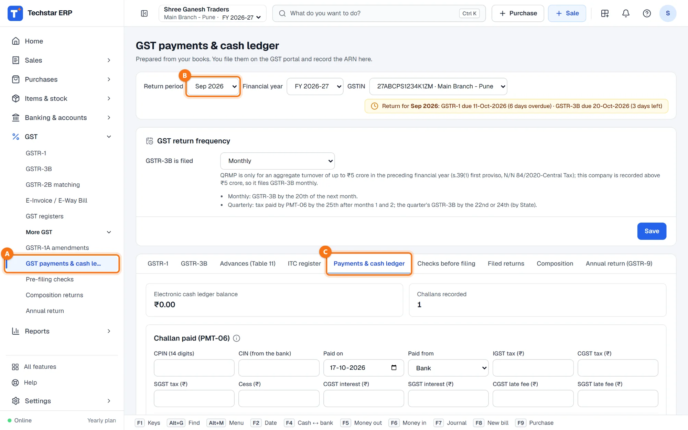
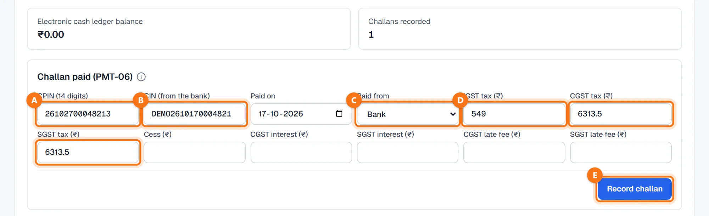
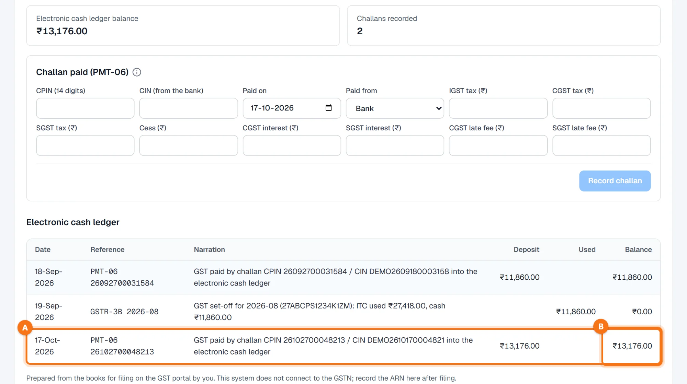
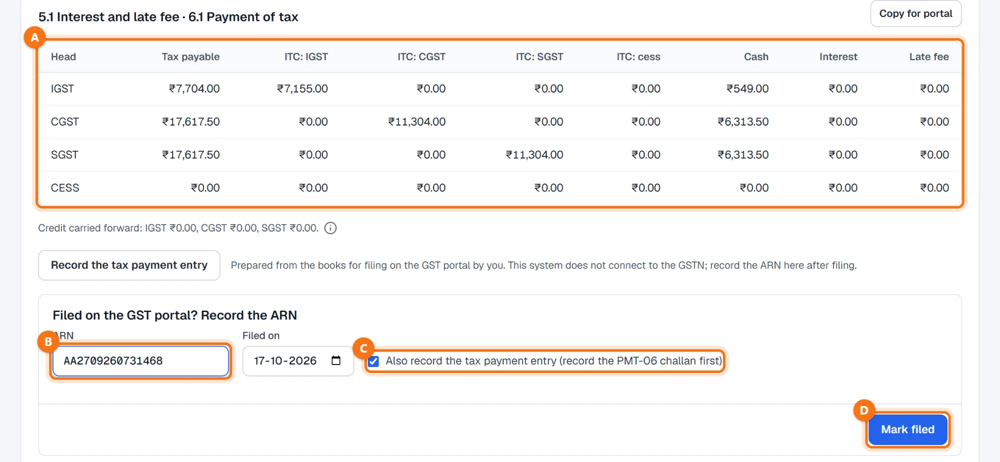
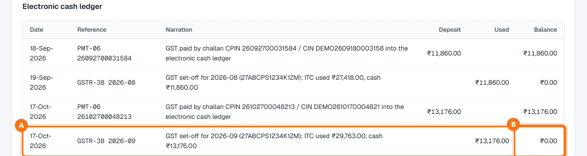

Techstar ERP is also in Hindi and Marathi. Click the round button with your initial (top right) → Language → हिन्दी or मराठी. The menu changes to that language; invoices and other legal documents print as usual. The screenshots in this guide use the English menu.
Before you start
The payment is made on the GST portal. Create the PMT-06 challan there and pay it through your bank. Techstar ERP does not pay tax and does not connect to the GSTN; it records the challan you paid.
Know how much to pay. GSTR-3B shows the cash to pay per head in table 6.1 — see Prepare GSTR-3B.
Open GST payments
In the left menu open GST → More GST → GST payments & cash ledger A. It is the Payments & cash ledger tab C of the GST returns screen. Check the Return period B: the challan is recorded for this month. In the example it is September 2026, whose GSTR-3B is due on 20 October.

The tiles show the Electronic cash ledger balance and the number of Challans recorded.
Enter the challan
Under Challan paid (PMT-06) fill in what is on the paid challan:
| Field | What to enter |
|---|---|
| CPIN (14 digits) A | The 14-digit challan number from the GST portal. The same CPIN cannot be recorded twice. |
| CIN (from the bank) B | The number the bank gives after payment. |
| Paid on | The payment date (today by default; not a future date). |
| Paid from C | Bank or Cash — the account the money left. |
| IGST / CGST / SGST tax, Cess D | The tax paid under each head, as on the challan. |
| CGST / SGST interest, late fee | Interest and late fee, if you paid any. |
Click Record challan E. The button works once the CPIN has 14 digits.

See it in the cash ledger
You see Challan recorded in the electronic cash ledger. The challan appears in the Electronic cash ledger A as a deposit, with the CPIN and CIN in the narration, and the running balance B goes up. In your books the amount moves from the bank (or cash) to the GST electronic cash ledger.

Use the cash in GSTR-3B
File GSTR-3B on the GST portal. Then open the GSTR-3B tab of the same month. Table 6.1 A shows how the tax is paid: part through ITC, the rest in cash — here ₹549.00 IGST, ₹6,313.50 CGST and ₹6,313.50 SGST, the same as the challan.
Under Filed on the GST portal? Record the ARN type the ARN B, keep Also record the tax payment entry (record the PMT-06 challan first) C ticked and click Mark filed D.

The tax payment entry clears the output GST ledgers against the input GST and the electronic cash ledger. If the cash ledger does not hold enough cash for it, the ERP refuses and asks you to record the PMT-06 challan first. You can also post it on its own with Record the tax payment entry on the GSTR-3B tab.
The cash ledger after filing
Back on Payments & cash ledger, the set-off appears as GSTR-3B 2026-09 A under Used, with the ITC used and the cash in the narration, and the balance B comes back to ₹0.00. On the Filed returns tab the return shows its ARN and Tax payment entry: Posted.

Common questions
Can I pay GST from Techstar ERP?
Where do I find the CPIN and the CIN?
Mark filed says the cash ledger does not hold enough cash.
I entered a challan twice by mistake.
More guides
Screenshots are from Techstar ERP with a demo company (Shree Ganesh Traders, Pune). All names, GSTINs, amounts and document numbers are sample data.